|
LTE Basic Procedure Go Back To Index Home : www.sharetechnote.com |
|
|
Procoding
Unfortunately I don't know how to explain this part in plain language without using any mathematical tools. As you see in the following diagram, Precoding is the process that is between Layer Mapper and Resource mapper. In practice, this precoding is the process that rearrange the IQ constellation into the form that can maximize the throughput to the multiple reciever antenna. 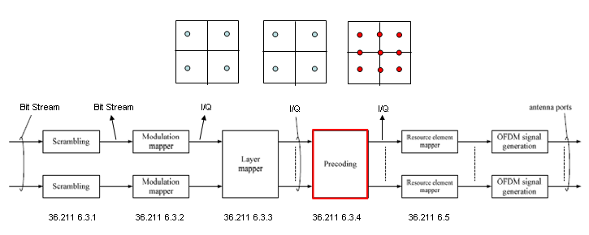
To make the process and understanding simpler, let's assume that we are only focusing on two antenna case. If it is two antenna case, the block diagram around the Precoding looks as follows. (TM4 is using this configuration)
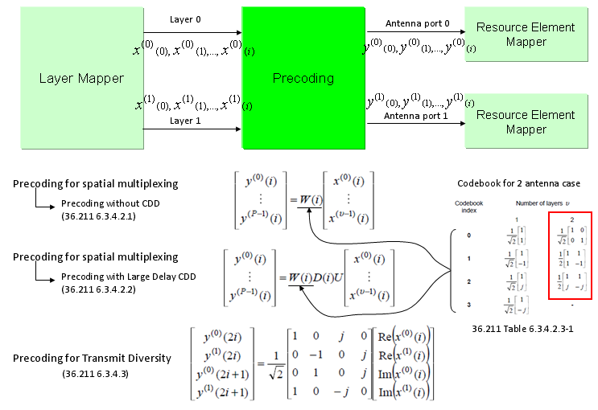 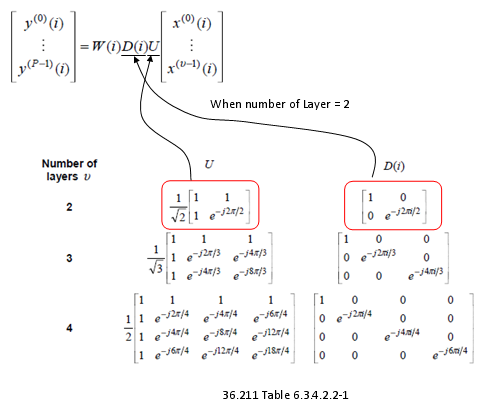
The only way to understand this concept to the skin would be to try this yourself and play with all these parameters like your toys. To help this, I created a small octave code and attached here. (I create this code in Octave which is a Matlab like GNU program, but I guess it will run in Matlab without any modification. I tried to write the code so that I can run on both program but I haven't tested it in Matlab myself).
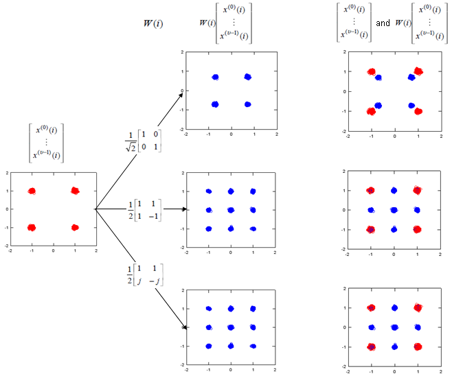
Note : If I expand the transformation shown above into a 2 x 2 case to give you more concrete idea, it can be illustration as follows. Since all of the data used here are complex numbers (Real = I, Imaginary = Q), the result of operation may not be so intuitive to you. If you are really interested in understanding the result of transformation, try this transformation with your own program or pen-paper calculation on your own. At least, play with the matlab code that I created and linked here.
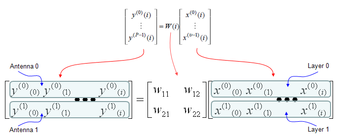
Following is the real Downlink signal coming out of a LTE network emulator. I capture the signal and analyzed it with a vector spectrum analyzer with LTE analysis functionality.
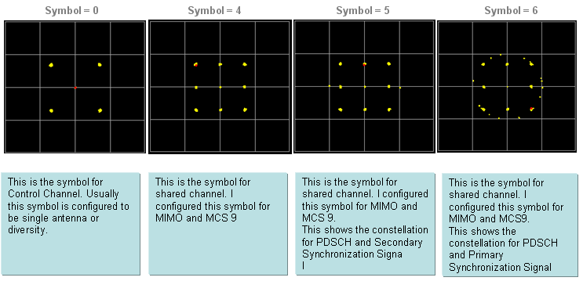
Now let try apply the CDD. I would recommend you to try investigate on what's is CDD in practical sense and what would be the advantage of applying CDD. Here I would only show you the result of the CDD application. The Octave code is here. (I create this code in Octave which is a Matlab like GNU program, but I guess it will run in Matlab without any modification. I tried to write the code so that I can run on both program but I haven't tested it in Matlab myself).
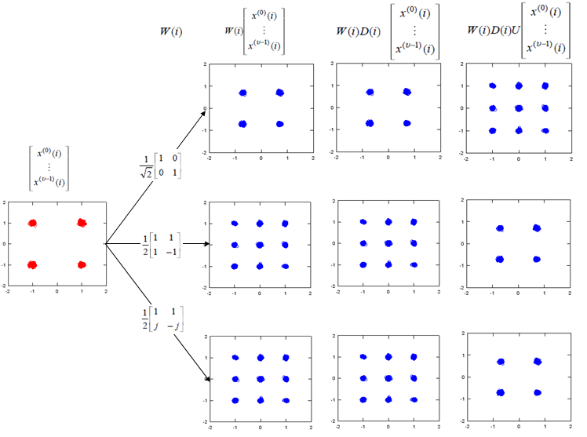
Following is the case where a single layer data stream gets transmitted by two antenna. Overall procedure is as follows. (TM6 is using this configuration)
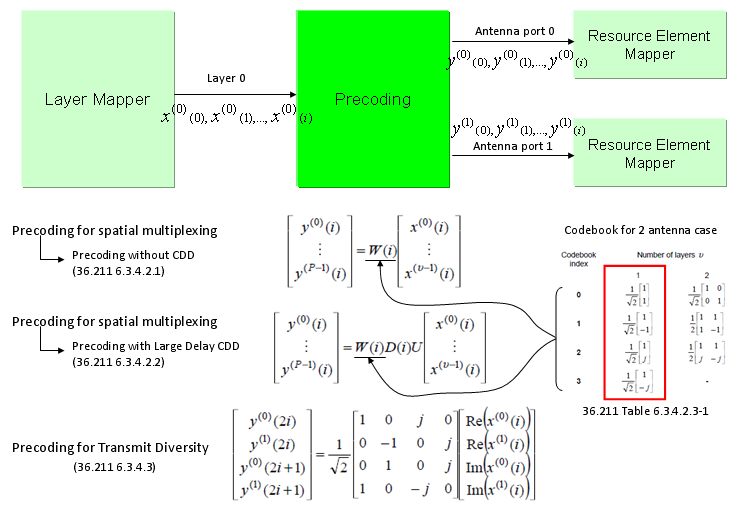
If we apply the Layer 1 code book to a sequence of data, we will get the constellation as follows. If you briefly see the constellation, you don't find any differences in terms of constellation except overall amplitude gets smaller after going through the precoding block. But if you following through the precoding process for each one (single) constellation, you will understand the differences. The Octave code is here. (I create this code in Octave which is a Matlab like GNU program, but I guess it will run in Matlab without any modification. I tried to write the code so that I can run on both program but I haven't tested it in Matlab myself). 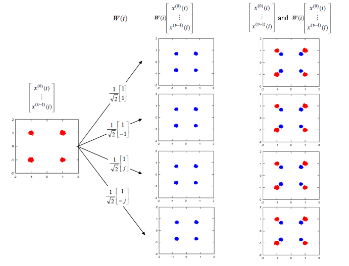
Note : If I expand the transformation shown above into two antenna case (diversity) to give you more concrete idea, it can be illustration as follows. Since all of the data used here are complex numbers (Real = I, Imaginary = Q), the result of operation may not be so intuitive to you. If you are really interested in understanding the result of transformation, try this transformation with your own program or pen-paper calculation on your own. At least, play with the matlab code that I created and linked here.
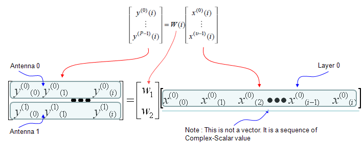
As I mentioned above, if you just see the overall constellation, you don't find any differences in terms of constellation except overall amplitude gets smaller after going through the precoding block. But if you following through the precoding process for each one (single) constellation, you will understand the differences. Following sequences of plots shows you 'Precoding' result of each points with each precoding (transformation) vector. Colored spots represents the constellation (I/Q data) coming(I/Q data) out of Layer Mapping block and coming into Precoding block. Black spots represents the constellation coming out of the Precoding block. You would notice that each of the colored spots creates two black spots. Even for the plot with only one black spots, it is the superimposed result of two black spots. Each of the black spots gets transmitted by each of the antenna. The Octave code is here. (I create this code in Octave which is a Matlab like GNU program, but I guess it will run in Matlab without any modification. I tried to write the code so that I can run on both program but I haven't tested it in Matlab myself).
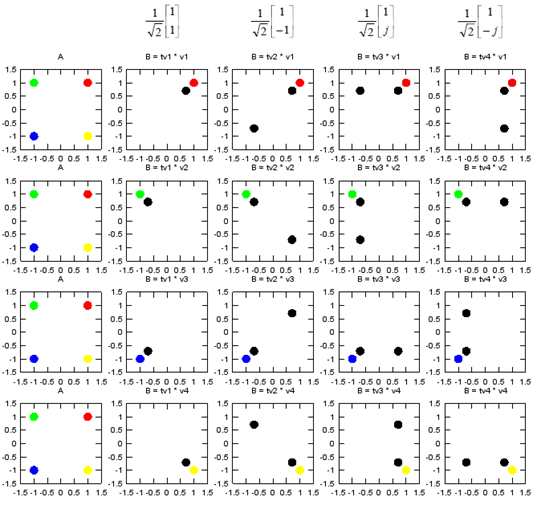
|